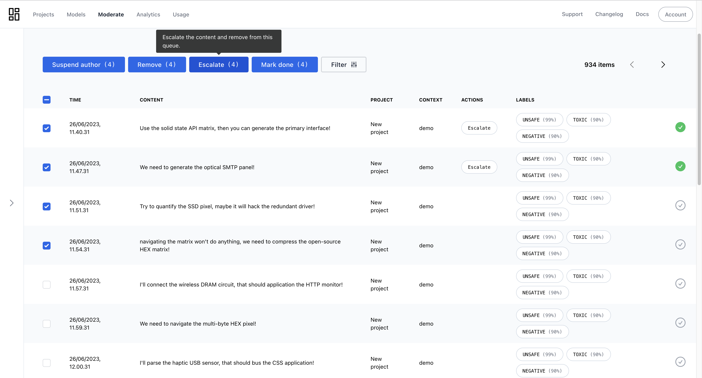
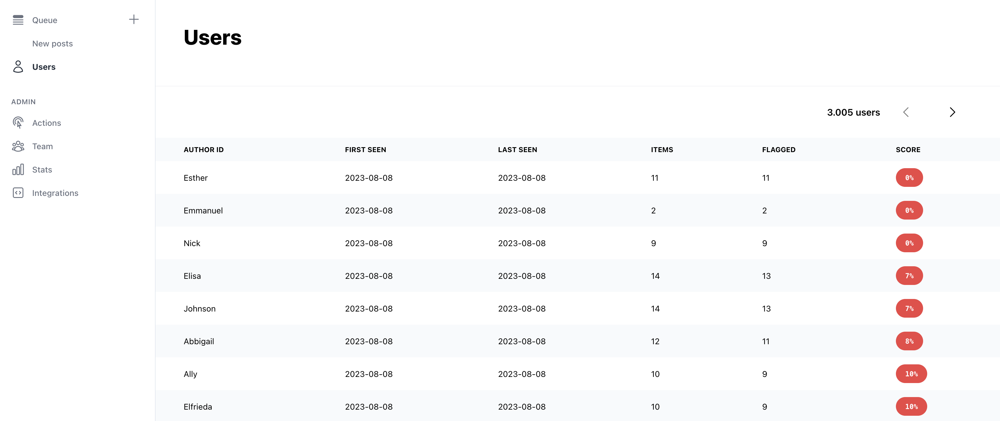

Introduction
Welcome to the Moderation API.
The moderation API automates advanced text analysis tasks.
- Identify personal information and mask it out - also if the user attempts to evade detection.
- Detect toxic content in real time.
- Detect and remove profanity - also if the user attempts to evade detection.
- Analyze the quality of a text and prevent spam.
- Detect the language of a text.
- Remove sensitive data from text.
The basic workflow is:
- Create a project in the dashboard and add models to it.
- Send a request to the API with content.
- We send back the detected values and original content with masked out values.
Not a developer?
If you're not a developer, you can still use the API. We have many integrations and no-code solution that allows you to create projects and moderate content without writing a single line of code.
Authentication
To test your API key:
curl "https://moderationapi.com/api/v1/auth" \
-H "Authorization: Bearer API_KEY"
Response
{
"status": "success",
"message": "Valid API key",
"project": "My Project Name"
}
Moderation API uses keys to allow access to the API. You can get an API key by creating a project in the moderation dashboard.
Moderation API expects the key to be included in all API requests to the server in a header that looks like the following:
Authorization: Bearer API_KEY
Calling the API from browsers
Detecting emails using javascript and fetch:
const text = "Hello my email is chris@moderationapi.com. What is yours?";
const data = await fetch(
`https://moderationapi.com/api/v1/moderation/text?value=${encodeURIComponent(
text
)}`,
{
// Ideally the api key should not be included here, but only server side.
headers: {
Authorization: `Bearer ${API_KEY}`,
},
}
);
const { content } = await data.json();
// content = "Hello my email is {{ email hidden }}. What is yours?"
We recommend to only use the API server-side to avoid exposing your API key. Usually your server would call the API with some text before storing it in your database, and optionally store the original text alongside the moderated text.
Even though it's not recommended, it is still possible to call the API client-side from javascript. See the example to the right.
Errors
The API uses the following error codes:
| Error Code | Meaning |
|---|---|
| 400 | Bad Request -- Your request is invalid. |
| 401 | Unauthorized -- Your API key is wrong. |
| 403 | Forbidden -- The requested resource is for administrators only. |
| 404 | Not Found -- The specified resource could not be found. |
| 405 | Method Not Allowed -- You tried to access a resource with an invalid method. |
| 429 | Too Many Requests -- See rate limits |
| 500 | Internal Server Error -- We had a problem with our server. Try again later. |
| 503 | Service Unavailable -- We're temporarily offline for maintenance. Please try again later. |
Rate limits
The default API rate limit is 10 requests per 10 seconds.
We may reduce limits to prevent abuse, or increase limits to enable high-traffic applications. To request an increased rate limit, please contact support.
Handling rate limts
A basic technique for integrations to gracefully handle limiting is to watch for 429 status codes and build in a retry mechanism. The retry mechanism should follow an exponential backoff schedule to reduce request volume when necessary.
Resources
Account
Account endpoint
curl "https://moderationapi.com/api/v1/account" \
-H "Authorization: Bearer API_KEY"
The above endpoint returns a JSON object like this:
{
"id": "601fcbcd454faa5be1d36cf6",
"created_at": "2021-02-07T11:15:25.561Z",
"paid_plan_name": "Lite",
"text_api_quota": 100,
"text_api_usage_this_month": 45,
"current_project": {
"name": "My Project Name"
}
}
To check your account status at any time you can use this endpoint.
It will respond with your quota levels and current usage levels. Usage resets the 1st each month UTC time..
Projects
Endpoints:
GET /api/v1/projects
GET /api/v1/projects/:id
POST /api/v1/projects/:id
You can create multiple projects and use the API to moderate at different levels simultaneously. Each project has it's own filter that you can tweak to your preference.
New projects have to be created from the dashboard.
The Project Object
Project Object Example:
{
"_id": "601fe2eef2538064a22d496b",
"filter": {
"email": {
"enabled": true,
"mode": "NORMAL",
"mask": "{{ email hidden }}"
},
"phone": {
"enabled": true,
"mode": "NORMAL",
"mask": "{{ phone hidden }}"
},
"url": {
"enabled": true,
"mode": "NORMAL",
"mask": "{{ url hidden }}"
},
"address": {
"enabled": true,
"mode": "NORMAL",
"mask": "{{ address hidden }}"
}
},
"name": "My Project Name",
"apiKey": "project-api-key" // Is replaced with actual API Key
}
| Attribute | Type | Description |
|---|---|---|
| _id | string | Unique identifier for the project. |
| filter | object | The current filter settings for the project. See filter object |
| name | string | Detect even the slightest chance of containing personal information. |
| apiKey | string | The api key to be used with this project. See authentication |
Create a Project
Projects can only be created from the Moderation dashboard.
Get a Project
GET /api/v1/projects/:id
curl "https://moderationapi.com/api/v1/projects/:id" \
-H "Authorization: Bearer API_KEY"
Response
{
"_id": "601fe2eef2538064a22d496b",
"filter": {
"email": {
"enabled": true,
"mode": "NORMAL",
"mask": "{{ email hidden }}"
},
"phone": {
"enabled": true,
"mode": "NORMAL",
"mask": "{{ phone hidden }}"
},
"url": {
"enabled": true,
"mode": "NORMAL",
"mask": "{{ url hidden }}"
},
"address": {
"enabled": true,
"mode": "NORMAL",
"mask": "{{ address hidden }}"
}
},
"name": "My Project Name",
"apiKey": "project-api-key"
}
Retrieves the details of an existing project. Supply the unique project ID from either a project creation request or the project list, and the API will return the corresponding project information.
Parameters
No parameters
Returns
Returns a project object if a valid identifier was provided.
Update a Project
POST /api/v1/projects/:id
curl "https://moderationapi.com/api/v1/projects/:id" \
-H "Authorization: Bearer API_KEY"
-H "Content-Type: application/json"
-d json
Response
{
"_id": "601fe2eef2538064a22d496b",
"filter": {
"email": {
"enabled": true,
"mode": "NORMAL",
"mask": "{{ email hidden }}"
},
"phone": {
"enabled": true,
"mode": "NORMAL",
"mask": "{{ phone hidden }}"
},
"url": {
"enabled": true,
"mode": "NORMAL",
"mask": "{{ url hidden }}"
},
"address": {
"enabled": true,
"mode": "NORMAL",
"mask": "{{ address hidden }}"
}
},
"name": "My Project Name",
"apiKey": "project-api-key"
}
Updates the specific project by setting the values of the parameters passed. Any parameters not provided will be left unchanged.
Parameters
| Parameter | Type | Description |
|---|---|---|
| name optional | string | Name of project. Only used internally. |
| filter optional | object | Filter options to be used for this project. |
Returns
Returns the project object if the update succeeded.
Delete a Project
Projects can only be deleted from the Moderation dashboard.
List All Projects
GET /api/v1/projects
curl "https://moderationapi.com/api/v1/projects" \
-H "Authorization: Bearer API_KEY"
Response
[
{
"_id": "601fe2eef2538064a22d496b",
"filter": {
"email": {
"enabled": true,
"mode": "NORMAL",
"mask": "{{ email hidden }}"
},
"phone": {
"enabled": true,
"mode": "NORMAL",
"mask": "{{ phone hidden }}"
},
"url": {
"enabled": true,
"mode": "NORMAL",
"mask": "{{ url hidden }}"
},
"address": {
"enabled": true,
"mode": "NORMAL",
"mask": "{{ address hidden }}"
}
},
"name": "My Project Name",
"apiKey": "project-api-key"
}
]
Returns a list of your projects. The projects are returned sorted by creation date, with the most recent project appearing first.
Parameters
No Parameters
Returns
An array with all projects. Each entry in the array is a separate projects object. If no more projects are available, the resulting array will be empty. This request should only return an error if the API key is invalid.
Filter
The filter is used to control the detection engine and the responses you get from the API. We recommend update your filter from the moderation dashboard here: https://moderationapi.com/app/projects
You can also update the filter programmatically using the API when updating a project.
Detection
Overview
The moderation API works by submitting content to the API and you get back the cleaned content and matches for the type of data you're looking for.
You can analyze text using 3 types of models:
The models are added to a project in the dashboard, and then used through the endpoint /api/v1/moderation/text.
POST /api/v1/moderation/text
curl "https://moderationapi.com/api/v1/moderation/text" \
-H "Authorization: Bearer API_KEY"
-H "Content-Type: application/json"
-d json
Response
{
"status": "success",
"request": {
"timestamp": 1612792574690
},
"content_moderated": true,
"data_found": true,
"flagged": true,
"original": "You can contact me on mr_robot[at]gmail|DOT|com or call me on 12 34 65 78",
"content": "You can contact me on {{ email hidden }} or call me on {{ number hidden }}",
"email": {
"found": true,
"mode": "SUSPICIOUS",
"matches": ["mr_robot[at]gmail|DOT|com"]
},
"phone": {
"found": true,
"mode": "NORMAL",
"matches": ["12 34 65 78"]
},
"url": {
"found": false,
"mode": "NORMAL",
"matches": []
},
"address": {
"found": false,
"mode": "NORMAL",
"matches": []
},
"name": {
"found": false,
"mode": "NORMAL",
"matches": []
}
}
Parameters
| Parameter | Type | Required | Description |
|---|---|---|---|
| value | string | Required | The text content you want to moderate. Limited to 10.000 characters per request. |
| contextId | string | Optional | An ID representing the context, for example the ID of the thread or chat room. Is utilized by some models to improve accuracy by taking the context into account. |
| authorId | string | Optional | An ID for the author of this content. Useful when using the moderation dashboard. |
| metadata | object | Optional | Metadata to stored with the content. |
| doNotStore | boolean | Optional | If set to true, the content will not be stored in the moderation dashboard. |
Returns
Returns the moderation object. Whether a data type is included depends if it is turned on in the projects filter settings.
| Parameter | Type | Description |
|---|---|---|
| status | string | error or success. |
| content | string | The moderated string. If masking is turned on in the filter all detected values will be hidden. |
| content_moderated | boolean | A boolean indicating if the returned content is different from the original text. |
| data_found | boolean | A boolean indicating if any data has been found. Equal to checking each found field on the data types. |
| flagged | boolean | A boolean indicating if any of the models got triggered by the text. You might need to check the score of each model for a more precise result depending on your use case. |
| [model_id] | object | Each enabled data type get's it's own field in the response. Only included if detection is enabled for the data type. See the responses for each data type below. |
Built-in models
Email Moderation Object Example:
{
"email": {
"found": true,
"mode": "SUSPICIOUS",
"matches": ["mr_robot[at]gmail|DOT|com"]
}
}
| Parameter | Type | Description |
|---|---|---|
| matches | array of strings | The detected values in order of probability of being correct. |
| found | boolean | Indicates whether the content contains an email. This does not always correspond to if any matches are found - ex. the text might intent to share personal data, but an exact match cannot be found. |
| mode | string | The detection mode that has been set for emails in the project filter. |
Examples
| Value | Detected by | Matches |
|---|---|---|
| reach me on example@gmail.com | NORMAL, SUSPICIOUS , PARANOID |
example@gmail.com |
| reach me on example at gmail dot com | SUSPICIOUS , PARANOID |
example at gmail dot com |
| reach me on example at that google email domain | PARANOID |
example at that google email domain |
Phone number
Phone Moderation Object Example:
{
"phone": {
"found": true,
"mode": "NORMAL",
"matches": ["12 34 56 78"]
}
}
| Parameter | Type | Description |
|---|---|---|
| matches | array of strings | The detected values in order of probability of being correct. |
| found | boolean | Indicates whether the content contains a phone number. This does not always correspond to if any matches are found - ex. the text might intent to share personal data, but an exact match cannot be found. |
| mode | string | The detection mode that has been set for phone numbers in the project filter. |
Examples
| Value | Detected by | Matches |
|---|---|---|
| 12 34 56 78 | NORMAL, SUSPICIOUS , PARANOID |
12 34 56 78 |
| one two three four five six seven eight | SUSPICIOUS , PARANOID |
one two three four five six seven eight |
| 12 this 34 is 46 an 7 example 8 | PARANOID |
12 this 34 is 46 an 7 example 8 |
URLs
URL Moderation Object Example:
{
"url": {
"found": true,
"mode": "NORMAL",
"matches": ["http://anonymous.com"]
}
}
| Parameter | Type | Description |
|---|---|---|
| matches | array of strings | The detected values in order of probability of being correct. |
| found | boolean | Indicates whether the content contains an URL. This does not always correspond to if any matches are found - ex. the text might intent to share a URL, but an exact match cannot be found. |
| mode | string | The detection mode that has been set for URLs in the project filter. |
Examples
| Value | Detected by | Matches |
|---|---|---|
| http://anonymous.com | NORMAL, SUSPICIOUS , PARANOID |
http://anonymous.com |
| anonymous.com | SUSPICIOUS , PARANOID |
anonymous.com |
| anonymous(dot)com | PARANOID |
anonymous(dot)com |
Address
Address Moderation Object Example:
{
"address": {
"found": true,
"mode": "NORMAL",
"matches": ["767 5th Ave, New York, NY 10153"]
}
}
Address detection uses an advanced AI trained specifically for detecting addresses. The AI works well on a wide range of addresses, but can increase the API response time. It will detect everything from house numbers to cities and postal codes for both real and imaginary addresses.
| Parameter | Type | Description |
|---|---|---|
| matches | array of strings | The detected addresses in the order they're found in the text. |
| found | boolean | Indicates whether the content contains an address. |
| mode | string | The detection mode that has been set for addresses in the project filter. |
Examples
Value with highlighted matches |
|---|
You can visit our store on 767 5th Ave, New York, NY 10153. |
They live on the Abbey Road, but it's a long way from here. |
Diagon Alley 123 is hidden behind the brick wall. |
Person Names
Person names Moderation Object Example:
{
"name": {
"found": true,
"mode": "NORMAL",
"matches": ["Albus Dumbledore"]
}
}
| Parameter | Type | Description |
|---|---|---|
| matches | array of strings | The detected names in the order they're found in the text. |
| found | boolean | Indicates whether the content contains a name. |
| mode | string | The detection mode that has been set for names in the project filter. |
Only detect parts of the name
If you only want to hide last names you can change the level detected name components in the filter. Either using the API or in the dashboard.
Examples
| Value | Components | Matches |
|---|---|---|
| My name is Albus Percival Dumbledore | ['first', 'middle', 'last'] |
Albus Percival Dumbledore |
| My name is Albus Percival Dumbledore | ['middle', 'last'] |
Percival Dumbledore |
| My name is Albus Percival Dumbledore | ['last'] |
Dumbledore |
Usernames
For examples detect Instagram handles or other social media usernames.
Usernames Moderation Object Example:
{
"username": {
"found": true,
"mode": "SUSPICIOUS",
"matches": ["@chris_93"]
}
}
| Parameter | Type | Description |
|---|---|---|
| matches | array of strings | The detected values in order of probability of being correct. |
| found | boolean | Indicates whether the content contains a username. This does not always correspond to if any matches are found - ex. the text might intent to share personal data, but an exact match cannot be found. |
| mode | string | The detection mode that has been set for usernames in the project filter. |
Swear Words and Profanity
Detect profane and inappropriate words. Does not detect toxic language without swear words - for example: "You are a monkey". To handle such use-cases we recommend our toxicity analyzer.
Profanity Moderation Object Example:
{
"profanity": {
"found": true,
"mode": "NORMAL",
"matches": ["fuck"]
}
}
| Parameter | Type | Description |
|---|---|---|
| matches | array of strings | The detected profane words. |
| found | boolean | Indicates whether the content contains profane words. |
| mode | string | The detection mode that has been set for profanity in the project filter. |
Examples
| Value | Detected by | Matches |
|---|---|---|
| fuck | NORMAL, SUSPICIOUS , PARANOID |
fuck |
| ffuuccckkk | SUSPICIOUS , PARANOID |
ffuuccckkk |
| kcuf | PARANOID |
kcuf |
Sensitive numbers
This model detects a range of sensitive information:
- Personal Numbers: detect social security numbers, driver IDs, passport numbers, etc.
- Bank Accounts: detect account numbers and routing numbers.
- Payment Cards: detect card numbers, expiry dates and CVV.
- Passwords: detect passwords and 4-digit pin codes.
- Digital Addresses: detect IP-addresses and MAC addresses.
Sensitive Numbers Moderation Object Example:
{
"sensitive": {
"found": true,
"mode": "NORMAL",
"matches": ["password1234", "4242 4242 4242 4242"],
"components": [
{
"password": "password1234",
"credit_debit_number": "4242 4242 4242 4242"
}
]
}
}
| Parameter | Type | Description |
|---|---|---|
| matches | array of strings | The detected values words. |
| found | boolean | Indicates whether the content contains sensitive numbers. |
| mode | string | The detection mode that has been set for sensitive numbers in the project filter. |
Language Analyzer
POST /api/v1/analyze/language
curl "https://moderationapi.com/api/v1/analyze/language" \
-H "Authorization: Bearer API_KEY"
-H "Content-Type: application/json"
-d `{
"value": "This is an english text"
}`
Detect Language Response Example:
{
"code": "en", // in ISO 639
"label": "ENGLISH",
"score": 96,
"reliable": true
}
Detect what language a text is written in /api/v1/analyze/language.
Probabilistically detects over 160 languages. We're not listing all the languages here, but if you need a comprehensive list, please message us.
Parameters
| Parameter | Type | Description |
|---|---|---|
| value | string | The text you want to analyze. Limited to 10.000 characters per request. |
Returns
Returns an object with the detected language.
| Parameter | Type | Description |
|---|---|---|
| code | string? | The ISO 639 of the language. Returns null if the analyzer fails. |
| label | string? | An UPPERCASE name of the language. Returns null if the analyzer fails. |
| score | int | 0-1 score with 1 meaning a high probability of being correct. Returns 0 on fails. |
| reliable | int | The analyzer is reasonably confident about this guess, e.g. the score is high. |
| error | string? | If the analyzer failed an error will be returned. |
Toxicity Analyzer
POST /api/v1/analyze/toxicity
curl "https://moderationapi.com/api/v1/analyze/toxicity" \
-H "Authorization: Bearer API_KEY"
-H "Content-Type: application/json"
-d `{
"value": "I will make you regret that"
}`
Detect Toxicity Response Example:
{
"label": "TOXICITY",
"label_scores": {
"TOXICITY": 0.80321377,
"PROFANITY": 0.16329151,
"DISCRIMINATION": 0.12677783,
"NEUTRAL": 0.17654026
}
}
Works on the whole text to detect general features like profanity, swearing, racism, threats etc. /api/v1/analyze/toxicity. Contrary to our profanity filter the toxicity analyzer will detect cases where the profanity is not as pronounced.
Labels
| Label | Description |
|---|---|
| TOXICITY | The general toxicity. If any other labels have a high score, this one is likely to score high as well. |
| PROFANITY | Containing swearing, curse words, and other obscene language. |
| DISCRIMINATION | Racism and other discrimination based on race, religion, gender, etc. |
| NEUTRAL | Nothing toxic was detected. |
Parameters
| Parameter | Type | Description |
|---|---|---|
| value | string | The text you want to analyze. Limited to 10.000 characters per request. |
Returns
Returns an object with the detected label and respective scores.
| Parameter | Type | Description |
|---|---|---|
| label | string? | The most probable label. Returns null if the analyzer fails. |
| label_scores | obejct | An object containing all the label scores. From 0-1 score with 1 meaning a high probability of being correct. |
Quality Analyzer
POST /api/v1/analyze/quality
curl "https://moderationapi.com/api/v1/analyze/quality" \
-H "Authorization: Bearer API_KEY"
-H "Content-Type: application/json"
-d `{
"value": "Want to get rich quick? Go to quickmoney.sx and sign up."
}`
Analyze Quality Response Example:
{
"label": "SPAM",
"label_scores": {
"SPAM": 0.9337343,
"INCOHERENT": 0.89032257,
"UNSUBSTANTIAL": 0.68944305,
"NEUTRAL": 0.0662657
}
}
Detect spam and insubstantial text, etc. /api/v1/analyze/quality.
Labels
| Label | Description |
|---|---|
| UNSUBSTANTIAL | Trival or short content. |
| INCOHERENT | Difficult to understand and nonsensical. |
| SPAM | Repetitive, irrelevant content trying to make you visit a website eg. |
| NEUTRAL | The text is relativey high quality. |
Parameters
| Parameter | Type | Description |
|---|---|---|
| value | string | The text you want to analyze. Limited to 10.000 characters per request. |
Returns
Returns an object with the detected label and respective scores.
| Parameter | Type | Description |
|---|---|---|
| label | string? | The most probable label. Returns null if the analyzer fails. |
| label_scores | obejct | An object containing all the label scores. From 0-1 score with 1 meaning a high probability of being correct. |
Propriety Analyzer
POST /api/v1/analyze/propriety
curl "https://moderationapi.com/api/v1/analyze/propriety" \
-H "Authorization: Bearer API_KEY"
-H "Content-Type: application/json"
-d `{
"value": "Can I get your number? 💦"
}`
Analyze Propriety Response Example:
{
"label": "FLIRTATION",
"label_scores": {
"FLIRTATION": 0.7784964,
"SEXUALLY_EXPLICIT": 0.315303,
"NEUTRAL": 0.2215036
}
}
Detect sexual and flirty language. /api/v1/analyze/propriety. Closely related to the toxicity endpoint but specialized to detect more subtle inappropriate comments.
Labels
| Label | Description |
|---|---|
| FLIRTATION | Pickup lines, compliments on appearance, etc. |
| SEXUALLY_EXPLICIT | References to sexual acts, body parts, etc. |
| NEUTRAL | The text is relativey high quality. |
Parameters
| Parameter | Type | Description |
|---|---|---|
| value | string | The text you want to analyze. Limited to 10.000 characters per request. |
Returns
Returns an object with the detected label and respective scores.
| Parameter | Type | Description |
|---|---|---|
| label | string? | The most probable label. Returns null if the analyzer fails. |
| label_scores | obejct | An object containing all the label scores. From 0-1 score with 1 meaning a high probability of being correct. |
NSFW Analyzer
POST /api/v1/analyze/nsfw
curl "https://moderationapi.com/api/v1/analyze/nsfw" \
-H "Authorization: Bearer API_KEY"
-H "Content-Type: application/json"
-d `{
"value": "How do i make a bomb?"
}`
Analyze NSFW Response Example:
{
"label": "UNSAFE",
"score": 0.67743,
"label_scores": {
"UNSAFE": 0.67743,
"SENSITIVE": 0.321657,
"NEUTRAL": 0.000897
}
}
Detect unsafe and sensitive topics. Useful for detecting content that might be inappropriate for children. Sensitive topics include, but are not limited to, violence, weapons, drugs, politics, religion, etc.
Labels
| Label | Description |
|---|---|
| UNSAFE | Violence, weapons, drugs, sexual, etc. |
| SENSITIVE | Politics, religion, etc. |
| NEUTRAL |
Parameters
| Parameter | Type | Description |
|---|---|---|
| value | string | The text you want to analyze. |
Returns
Returns an object with the detected label and respective scores.
| Parameter | Type | Description |
|---|---|---|
| label | string? | The most probable label. Returns null if the analyzer fails. |
| label_scores | obejct | An object containing all the label scores. From 0-1 score with 1 meaning a high probability of being correct. |
| score | number | The score of the most probable label. |
Sentiment Analyzer
POST /api/v1/analyze/sentiment
curl "https://moderationapi.com/api/v1/analyze/sentiment" \
-H "Authorization: Bearer API_KEY"
-H "Content-Type: application/json"
-d `{
"value": "It was a dreadful day."
}`
Analyze Sentiment Response Example:
{
"label": "NEGATIVE",
"score": 0.999568,
"label_scores": {
"NEGATIVE": 0.999568,
"NEUTRAL": 0,
"POSITIVE": 0
}
}
The sentiment analyzer is trained to detect the sentiment of a text. It can detect positive, negative and neutral sentiment.
Labels
| Label | Description |
|---|---|
| NEGATIVE | Negative sentiment |
| POSITIVE | Positive sentiment |
| NEUTRAL |
Parameters
| Parameter | Type | Description |
|---|---|---|
| value | string | The text you want to analyze. |
Returns
Returns an object with the detected label and respective scores.
| Parameter | Type | Description |
|---|---|---|
| label | string? | The most probable label. Returns null if the analyzer fails. |
| label_scores | obejct | An object containing all the label scores. From 0-1 score with 1 meaning a high probability of being correct. |
| score | number | The score of the most probable label. |
Custom models
Overview
Consider creating custom models tailored to your specific needs, aiming to improve accuracy under special use cases.
Custom models work similar to the default analyzers, but you can train them to detect specific labels.
All custom models can be used from /api/v1/analyze/{modelId} or using the moderation endpoint: /api/v1/moderation/text if the model has been added to a project in your dashboard.
Creating a custom model
Create and train custom models from your dashboard. In the dashboard you can create your own labels, and import data to train the model on.
The model will work best if you can provide minimum 100 examples for each label you want to detect.
See a detailed guide on how to create a custom model here: https://moderationapi.com/blog/custom-classifier-ai-models/
Using a custom model
POST /api/v1/analyze/[modelId]
curl "https://moderationapi.com/api/v1/analyze/[modelId]" \
-H "Authorization: Bearer API_KEY"
-H "Content-Type: application/json"
-d `{
"value": "How are you doing?"
}`
Custom model Response Example:
{
"label": "LABEL_1",
"label_scores": {
"LABEL_1": 0.7784964,
"LABEL_2": 0.315303,
"LABEL_3": 0.2215036
}
}
It is recommended to use custom models by adding them to a project in your dashboard.
Parameters
| Parameter | Type | Description |
|---|---|---|
| value | string | The text you want to analyze. |
Returns
Returns an object with the detected label and respective scores.
| Parameter | Type | Description |
|---|---|---|
| label | string? | The most probable label. Returns null if the analyzer fails. |
| label_scores | obejct | An object containing all the label scores. From 0-1 score with 1 meaning a high probability of being correct. |
Limits
Characters
Your monthly quota is measured based on a count of 1 for every 1000 characters.
Training examples
Custom models can have a maximum of 5000 training examples, which should be sufficient for most scenarios. However, if you require additional training examples, please reach out to our support team. Additionally, each training example can have a maximum length of 10,000 characters.
AI Agents
Overview
AI Agents are great if you don't have a lot of training data, or if you want to get started quickly.
However they might not perform as well as a properly trained custom model.
Creating an AI Agent
When creating an AI Agent you first have to add your guidelines / rules for the agent to follow. Here it's best to very sepcific but keep it simple.
You can also set a strictness level for the agent. This will determine how strict the agent is when detecting content. For example the easygoing agent might let some mild violations through, while the strict agent will be better safe than sorry.
Using an AI Agent
Add your newly created AI agent to a project in the dashboard and consume it from the moderation endpoint.
AI Agent Response Example:
{
"label": "RULE_1",
"score": 1,
"rule": "No rude comments",
"label_scores": {
"NEUTRAL": 0,
"RULE_1": 1,
"RULE_2": 0,
"RULE_3": 0
}
}
Parameters
| Parameter | Type | Description |
|---|---|---|
| value | string | The text you want to analyze. |
Returns
Returns an object with the result of the agent's analysis. To stay consistent with the other analyzers, the agent will return a label and a score. The label will be RULE_n where n is the number of the rule that was triggered, and the score will always be 1.
If no rules are triggered, the label will be NEUTRAL.
| Parameter | Type | Description |
|---|---|---|
| label | string? | The name of the rule that was triggered. Returns NEUTRAL if no rules were triggered. |
| score | number | The score of the most probable label. Always 1 or 0. |
| rule | string? | The description of the rule that was triggered. Returns null if no rules were triggered. |
| label_scores | obejct | An object containing all the rules with either 0 or 1 as the score. |
Moderation
Besides automatically detecting and moderating content, you can also submit content for manual moderation. This is useful if you want to have a human in the loop or want to manually review content before it is published.
Content queue

Content submitted through the moderation endpoint will also enter the content moderation queue for manual monderation unless you specify doNotStore as true in the request body.
The moderation queue is a streamlined way to manually moderate content that has been flagged by the AI based on your project configuration.
You can create multiple queues for different projects, and assign different moderators to each queue.
Actions
You can create custom actions to take on content or users. The actions will show up in the moderation queue, and can be used by moderators. The actions does not enforce anything on our end other than showing the action in the moderation queue. It is up to you to implement the actions on your end using webhooks or use one of our platform plugins. However, you can create custom queues that show only content that has been flagged with a specific action. This way you can move content between queues using actions.
We recommend using actions for things like removing content from your platform, or banning users.
Webhooks
Webhook payload example
{
"id": "123",
"type": "QUEUE_ITEM_ACTION",
"timestamp": 1691496019049,
"item": {
"id": "644718a7fc78a41ec9f34a6d",
"flagged": true,
"labels": [
{
"label": "nsfw/UNSAFE",
"score": 0.7266457980882517,
"flagged": true,
"manual": false
},
{
"label": "nsfw/SENSITIVE",
"score": 0.01,
"flagged": false,
"manual": false
}
],
"language": "en",
"content": "Example content",
"timestamp": 1691496019049,
"metadata": {
"key": "value"
},
"queue": {
"id": "123",
"name": "My queue"
},
"action": {
"id": "123",
"name": "Remove content",
"value": "spam"
},
"contextId": "demo-context",
"authorId": "author-123"
}
}
You can set up webhooks for common events and actions from the moderation queue. This is useful if you want to integrate the queue with your own systems.
The webhook payload will be sent as a POST request to the URL you specify.
The webhooks require your server to respond with a 200 status code within 5 seconds, otherwise they will be retried. Webhooks are tried at most 5 times.
Webhook payload
| Field | Type | Description |
|---|---|---|
| id | string | The unique id of the event. |
| type | string | The type of the webhook. Can be QUEUE_ITEM_NEW, QUEUE_ITEM_ACTION or QUEUE_ITEM_COMPLETED. |
| timestamp | number | The timestamp of when the webhook was sent. |
| item | object | The content item that triggered the webhook. |
| item.id | string | The id of the content item. |
| item.flagged | boolean | Whether or not the content item has been flagged by your project configuration. |
| item.labels | array | An array of labels that the content item has been analyzed for - comes from your project configuration. |
| item.language | string | The ISO2 language code of the content item. |
| item.content | string | The original content of the content item. |
| item.timestamp | number | The timestamp of when the content item was submitted. |
| item.metadata | object? | The metadata of the content item. Specified by you when sending the content for moderation. |
| item.contextId | string? | The context id of the content item. Specified by you when sending the content for moderation. |
| item.authorId | string? | The author id of the content item. Specified by you when sending the content for moderation. |
| queue.id | string? | The id of the queue that the content item is in. |
| action.id | string? | The id of the action that was taken on the content item if the type is QUEUE_ITEM_ACTION |
| action.name | string? | The name of the action that was taken on the content item if the type is QUEUE_ITEM_ACTION |
| action.value | string? | The value of the action that was taken on the content item if the type is QUEUE_ITEM_ACTION |
Webhook signing
Next.js webhook signing example
import crypto from "crypto";
import { buffer } from "micro";
const handler = async (req, res) => {
try {
let rawBody = await buffer(req);
rawBody = rawBody.toString("utf8");
// The signature provided by Moderation API
const signature = Buffer.from(
req.headers["modapi-signature"] || "",
"utf8"
);
if (signature.length > 0) {
const digest = Buffer.from(
crypto
.createHmac("sha256", process.env.MODAPI_WEBHOOK_SECRET)
.update(rawBody)
.digest("hex"),
"utf8"
);
// Compare the provided signature to the one we generated
const isValid =
signature.length == digest.length &&
crypto.timingSafeEqual(signature, digest);
if (!isValid) {
throw new Error(
`Request body digest (${digest}) did not match modapi-signature (${signature})`
);
}
}
const payload = JSON.parse(rawBody);
console.log({ payload });
res.json({
ok: true,
});
} catch (error) {
res.status(500).json({
error,
time: new Date(),
});
}
};
// disable body parser so we can access raw body
export const config = {
api: {
bodyParser: false,
},
};
export default handler;
You can verify that the webhook is coming from us by comparing the signature of the payload with the signature provided in the modapi-signature header.
The signature is a HMAC SHA256 hash of the payload using your webhook secret as the key. Find you webhook secret under integrations in your dashboard.
Preventing replay attacks
To prevent replay attacks, you can use the timestamp in the payload of the webhook to ensure that the webhook is not older than 5 minutes.
Integrations
We offer integrations with many popular platforms. These integrations will automatically integrate your platform with the moderation queue and set up actions for you.
You can see a list of available integrations here: https://moderationapi.com/integrations
Please reach out to us if you want access to any of our integrations.
Users

The moderation endpoint allows you to submit an authorId to associate the content with a user. This will allow you to view all the content submitted by a specific user in the moderation queue. You can also take actions on specific users, such as banning them from your platform using a custom action.
All users can be viewed in the dashboard under the users tab. Here you can sort by the number of content items submitted by each user, or check the score of each user.
Example setup
Moderation queues are very versatile and can be used in many different ways. Feel free to reach out to us if you need any advice on how to set up your workflow.
Here is an example of how you could set up a moderation queue for a social media platform.
- Create a moderation queue for your project for flagged content within the last 30 days.
- Create a custom action called "Approve content" that will send a webhook to your platform.
- Every time someone posts content, submit it to
/api/v1/moderationand if the api responds with a flag, you hide it from your platform. - The content will show up in the moderation queue for your moderators to review.
- The moderators will then review the content in the moderation queue and can press "Approve content" to send a webhook to your platform to unhide the content or simply accept the flag by pressing "Done" and removing the item from the queue.
Next we can create a moderation queue for letting users report content.
- First create a new project, and create a button on your platform that will submit content to
/api/v1/moderationwith the api key from the new project. - Create a moderation queue called "Reported content" that is filtered to only display content from the newly created project.
- Create a custom action called "Remove content" that will send a webhook to your platform and hide the content.
- Every time someone reports content, it will show up in the "Reported content" queue and the moderators can press "Remove content" to hide the content from your platform.